Das Wesen steht in einer Ecke aus Papier. Seine Schatten an den Wänden sind die Ansichten. Eine Hand formt, zwei Finger schauen. Was du tust, zeigt sich in Licht, nicht in Worten.
Seite oben links, Front rechts daneben, Top darunter: Das ist exakt die europäische Projektionsmethode (ISO 5456-2, Methode 1). Bei ihr steht das Objekt zwischen dir und der Wand und wirft seine Ansicht nach hinten, wie einen Schatten.
Klappt man die drei Wände einer Raumecke flach, entsteht dein Blatt. Der Editor muss das nicht erklären. Er faltet es vor deinen Augen.
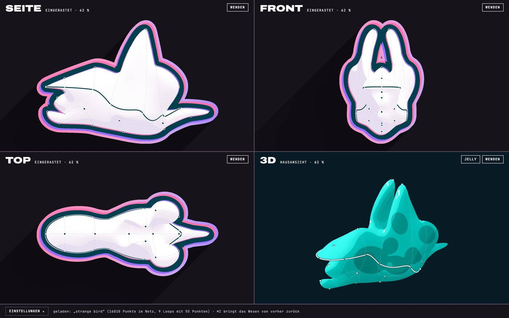
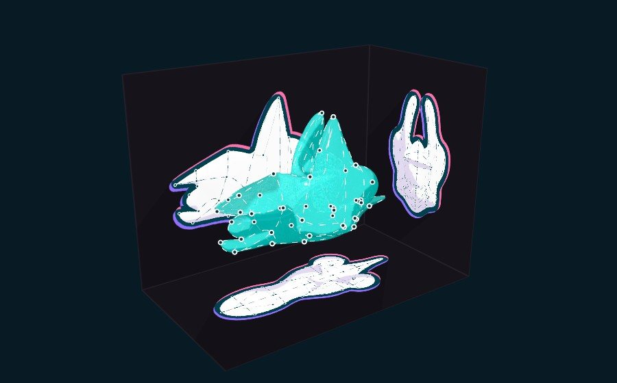
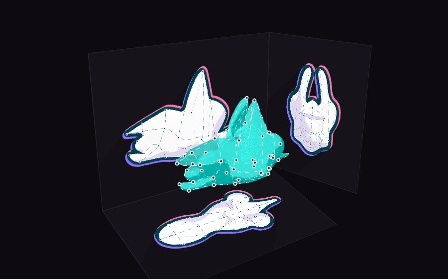
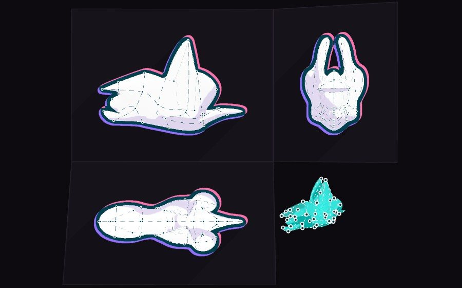
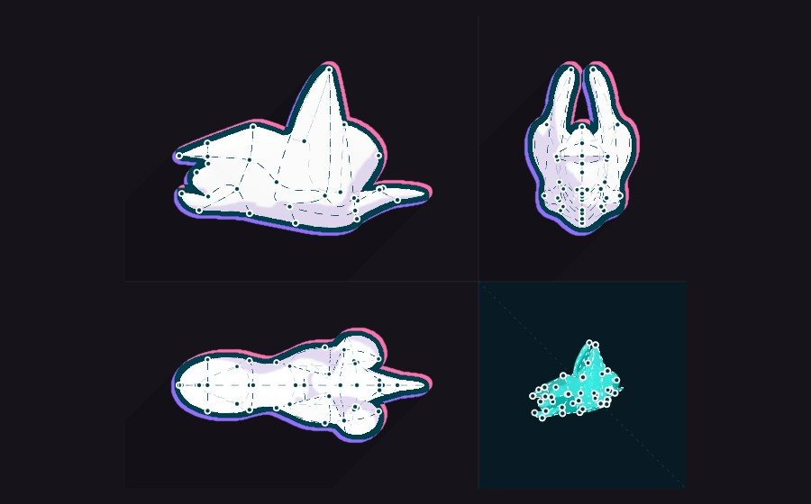
Es gibt keine Fenster, nur einen Raum, der sich falten lässt.
Drei Zustände derselben Szene: Raum (das Jelly-Wesen vor seinen Schatten), Blatt (aufgefaltet, alle Ansichten in einem Maßstab), Blick (eine Ansicht groß). Dazwischen gibt es keine Knöpfe, nur Bewegung.
Fasst du einen Punkt, laufen Ordnungslinien zu seinen Bildern in den anderen Ansichten, im Raum senkrecht auf die Wände, auf dem Blatt über die 45°-Gehrung der Zeichner.
Ein Finger macht. Zwei Finger schauen. Ein ruhender Finger hält.
Auf einem Ding formst du es, auf der Leere zeichnest du. Was ein Strich bedeutet, sagt seine Form: quer über den Körper ein Loop, geschlossen eine Form, Zickzack löscht, nachfahren tuscht.
Keine Werkzeugleiste, kein L, F, P oder O. Auf dem Mac gilt dieselbe Grammatik mit Maus und Trackpad, die Tasten bleiben als zweiter Weg.
Dunkles Cockpit: Nichts leuchtet ohne Anlass.
Zu sehen sind das Wesen, seine Linien und Punkte. Alles andere erscheint, wenn es gebraucht wird: ein Lichtring als Vorschau des Loops, ein Zirkel für den Einfluss, Seifenhaut, wo die Haut sich neu findet, eine Röntgenlinse, der Passer für die Pose.
Jede Geste zeigt ihr Ergebnis, bevor du loslässt.
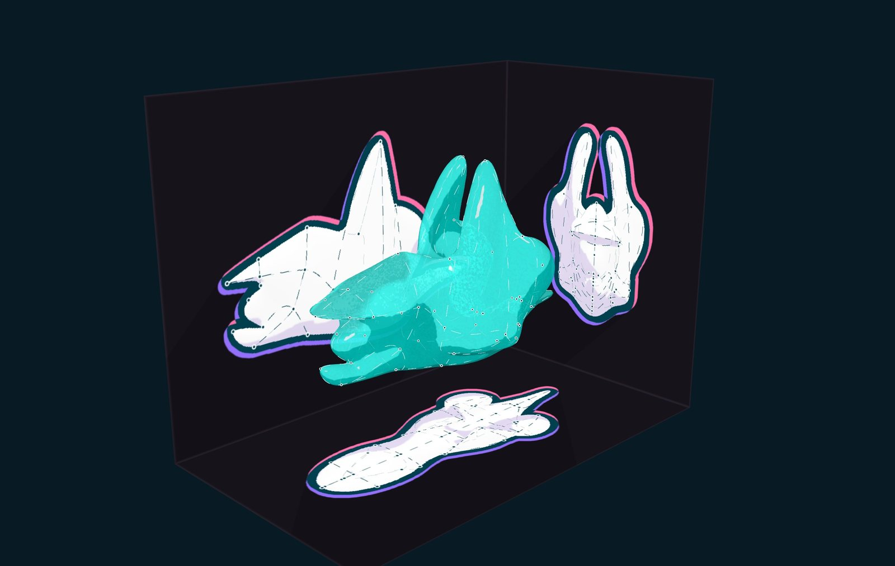
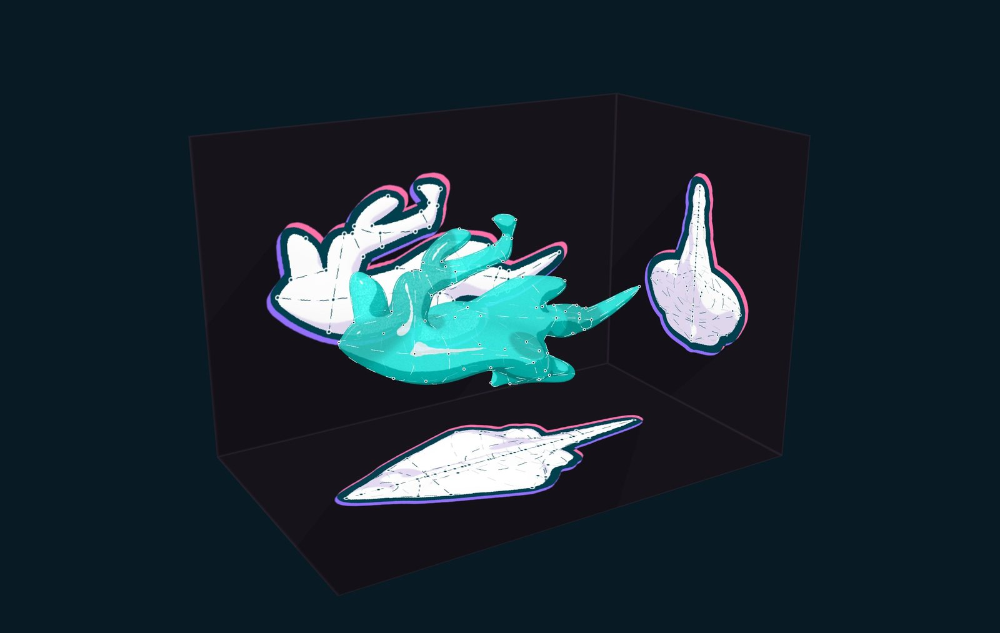
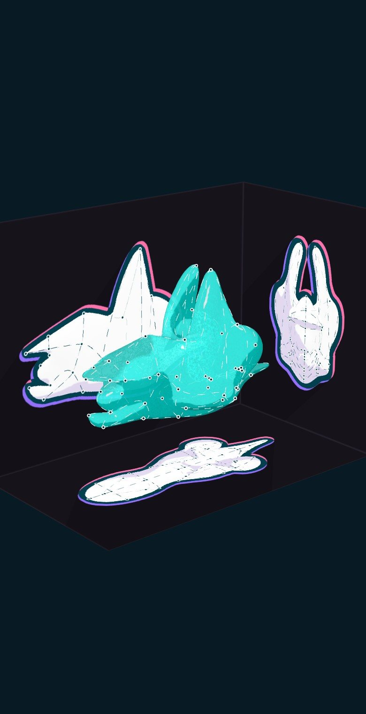
Was wegfällt: Werkzeugleiste (Loop, Form, Stift, Einfluss, Fressen), die Regler Maul und Kopf, Neu/Sichern/Laden, Fenstertitel, Wenden-Knöpfe, Hilfetexte, Statuszeile.
Was bleibt: dein Datenmodell (mitte, ring, paar, Punkte, Griffe, Kanten, Spiegel, Maul, Pose), der Look der Blaupause, das Jelly, deine Tasten als zweiter Weg.
Mac: Klick = Tippen, Trackpad mit zwei Fingern = drehen, Rad während eines Zugs = Einfluss, ⇧ = ruhender Finger, ⌥ = Röntgen, Tab = falten, 1/3/7 = Seite/Front/Top wie Blenders Ziffernblock.
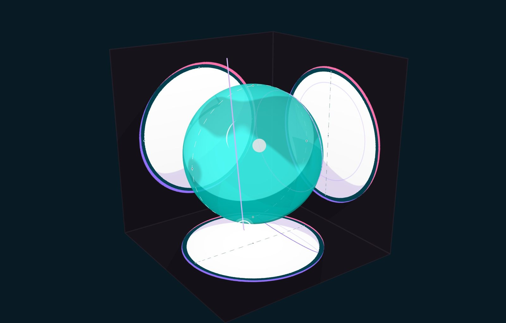
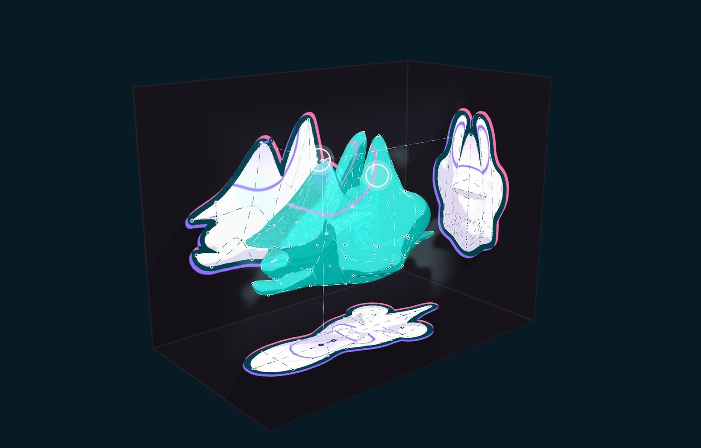
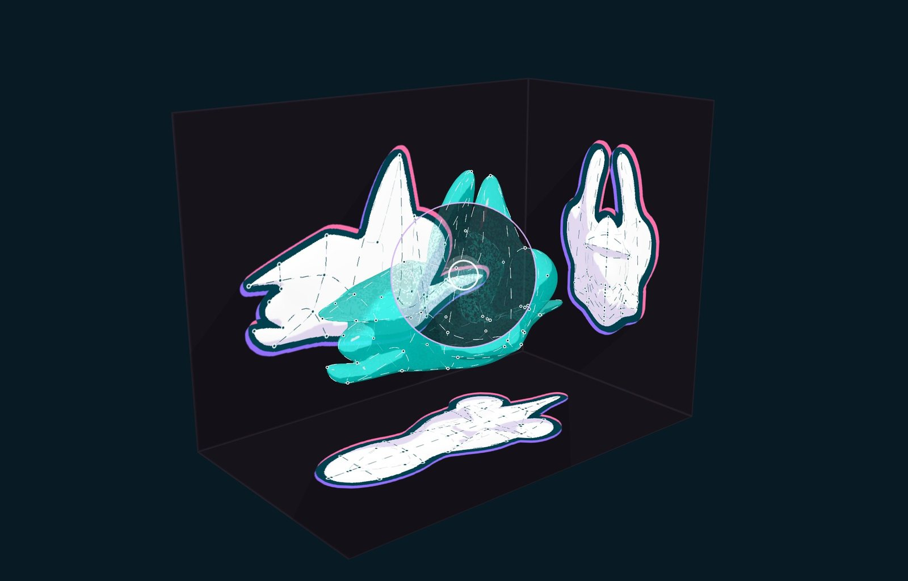
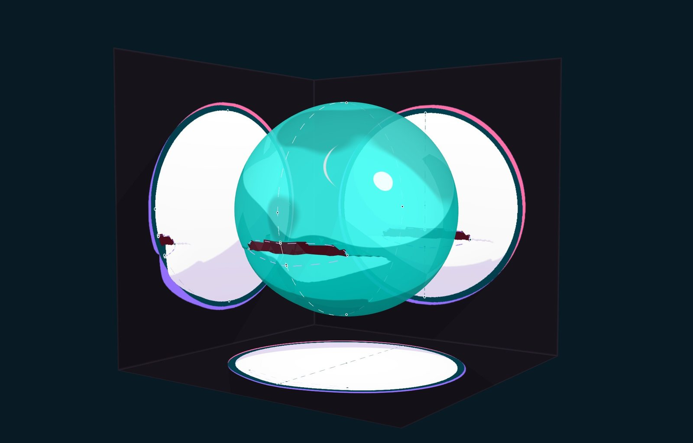
Eine Seite, alles darin. Auf dem Telefon mit Fingern, auf dem Mac mit Maus und Trackpad. Ein Finger auf der Leere zieht einen Strich; zwei Finger drehen.
Die Haut rechnet hier ein Ersatzverfahren (Verformung mit radialen Basisfunktionen durch die Proben der Linien), nicht dein Löser. Sie geht genau durch die Linien, bläst sich aber nicht auf wie deine, und Kanten sind gezeichnet, nicht gerechnet.
Rund 50 Quellen mit Links und Gegenstimmen: docs/look/editor/vision/RECHERCHE.md im Zweig claude/meme-curves-editor-concept-s65kq1.
Die Wände sind deine Illustrationen; Tusche und Bleistift sind Zeichnerbegriffe.
Im Raum dominiert das Jelly. Genau gezeichnet wird im Blick, eine Kneifbewegung entfernt.
Profile umrunden, zwei Hände am Ton (der ruhende Finger).
Direktes Drücken der Haut fehlt; ein Finger auf der Haut zeichnet.
Eine Ordnung statt eines Effekts: Blatt = Abwicklung, Blick = ein Feld daraus.
Drei Wände konkurrieren mit dem Wesen. Darum bleiben sie dunkel.
Kein Eingriff in den Löser. Die Wände sind drei Renderziele. Gemessen am „teat firefish“ (27 770 Punkte): Greifen einmal 30 ms, danach 2,4 ms je Bild im Median (höchstens 6,2 ms).
Nichts davon ist auf dem iPhone gemessen.
Keine Fehlerzustände, nur Zurück. Jede Geste hat ein Echo.
„Leben“ ist erst angedeutet (Atmen, Wackeln).
Ein Finger zeichnet: sofort belohnend. Zwei Finger drehen wie in Karten.
Zwei Finger tippen = zurück findet man nicht allein. Die Geisterhand zeigt es einmal.
Eine Regel statt vieler, Vorschau vor jeder Handlung, Tasten als zweiter Weg.
Zirkel und Zeitspulen sind schwer zu entdecken. „Leere zeichnet“ bricht deine Gewohnheit „Grund ziehen dreht“, deshalb gibt es die Variante.
Bedeutung liegt nie nur in der Farbe, sondern auch in Lage und Form. Seifenhaut und Bewegung lassen sich abschalten.
Ohne Beschriftung gibt es nichts für Bildschirmleser.
Übernahme in Schritten, jeder einzeln, ohne den Löser: 1 Blatt mit einem Maßstab und Ordnungslinien · 2 Raumecke als 3D-Fenster · 3 Grammatik · 4 Lichtsignale · 5 Falten · 6 Pose übers Maul, sobald das Maul eigene Geometrie hat.